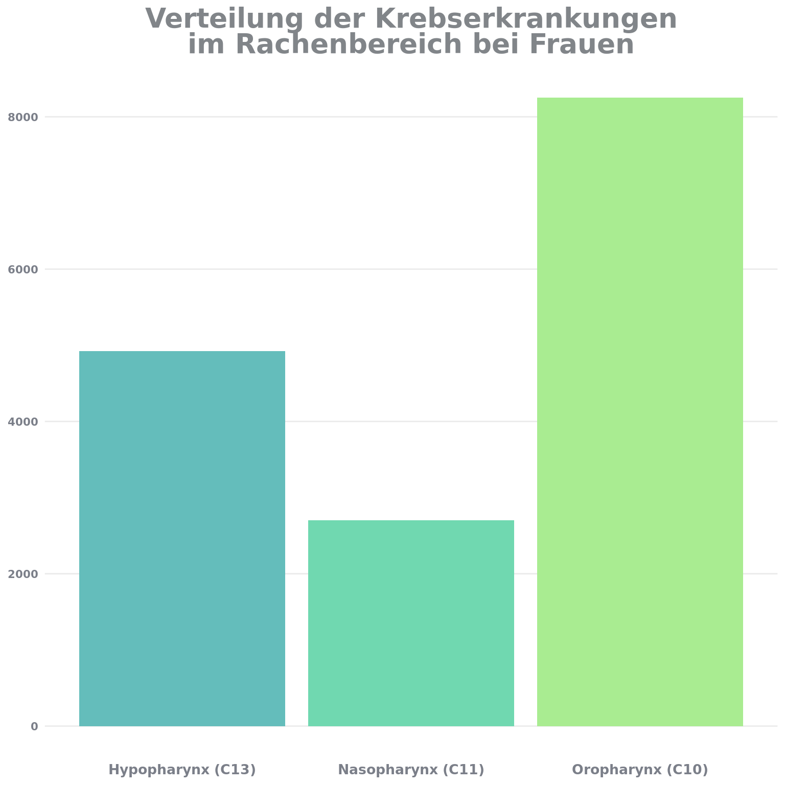
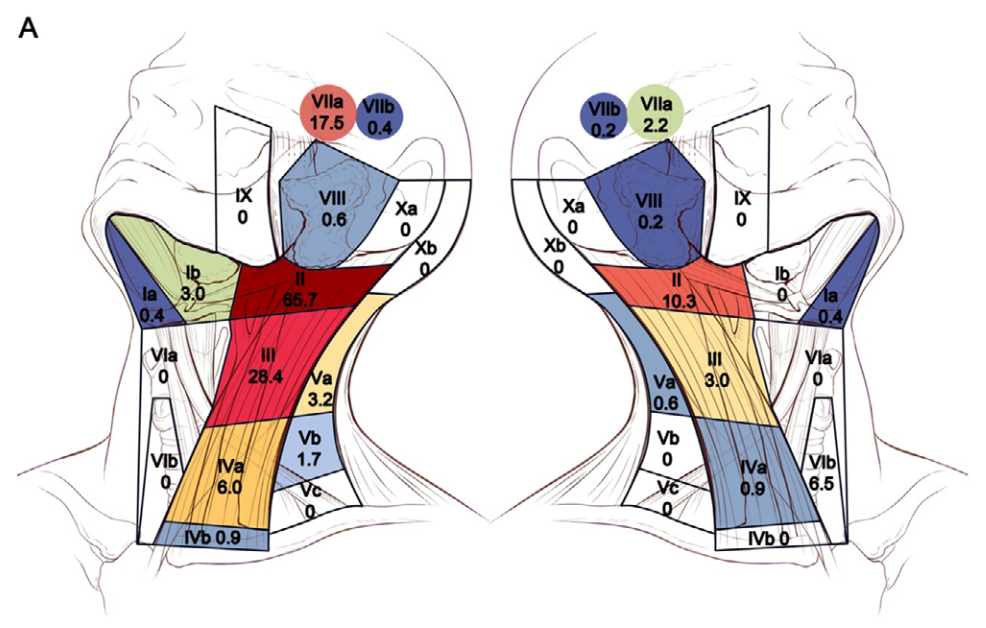

HNO
Elektive Lymphknotenlevels
Keine RT kontralateral bei pN0 oder bei Oropharynx und Mundhöhlenkarzinom >10mm Abstand zur Mittellinie, höchstens 3 ipsilaterale Lymphknoten, keine ECE, kein Hypopharynx o. Larynx.
Anm(DIREKHT>5mm ab Mittellinie, OP Bericht !)
Mundhöhle und Rachen
In Zahlen
Krebserkrankungen von Mundhöhle und Rachen stellen eine heterogene Gruppe bösartiger Neubildungen dar.
Männer erkranken häufiger und im Mittel zwei bis drei Jahre früher als Frauen. Bei Männern werden am häufigsten Tumoren des Oropharynx diagnostiziert, während bei Frauen Neubildungen der Mundhöhle und Lippe am häufigsten sind.
Insgesamt weisen Frauen mit 64 Prozent im Vergleich zu Männern mit 52 Prozent höhere relative 5-Jahres-Überlebensraten auf. Dazu trägt ein bei Frauen geringerer Anteil durch Tabak- und Alkoholkonsum geförderter Krebserkrankungen von Mundboden, Zunge und Rachen bei, die mit geringeren Überlebensaussichten verbunden sind als z.B. bösartige Tumoren von Lippe und Speicheldrüsen.1
Oropharynx
Anatomie
Der Oropharynx spielt sowohl für das Atmungs- als auch für das Verdauungssystem eine wichtige Rolle. Er umfasst mehrere Schlüsselstrukturen, von denen jede zu seiner Gesamtfunktion beiträgt, insbesondere beim Schlucken und bei der Verwaltung der Atemwege.
Vordere Wand: Die pharyngeale (hinteren Teil) Seite der Zunge.
Seitenwände: Sie bestehen aus den Gaumenbögen (Arcus palatoglossus und Arcus palatopharyngeus) und die Gaumenmandeln (Tonsillae palatinae), die sich in den sogenannten Fossa tonsillari befinden.
Hintere Wand: Befindet sich in Höhe der Halswirbel C2 bis C3 und wird durch die pharyngeale Muskulatur und Schleimhaut gebildet. Die hintere Wand ist Teil der Rachenhinterwand und grenzt an die prävertebralen Muskeln.
Obere Grenze: Der Oropharynx endet am weichen Gaumen, der ihn vom Nasopharynx trennt.
Untere Grenze: Sie liegt auf Höhe der Epiglottis, die den Oropharynx vom Laryngopharynx abgrenzt und beim Schlucken den Kehlkopf verschließt.3
ICD 10 Codes
| ICD-10 | ICD-10 Definition |
|---|---|
| C01 | Bösartige Neubildung des Zungengrundes |
| C10 | Bösartige Neubildung des Oropharynx |
| C02.4 | Linguale Tonsille |
| C05.1 | Weicher Gaumen |
| C05.2 | Uvula |
| C09 | Bösartige Neubildung der Tonsille (Tonsilla palatina) |
| C09.0 | Fossa Tonsillaris 1 |
| C09.1 | Gaumenbogen (vorderer) (hinterer) |
| C10.0 | Vallecula epiglottica |
| C10.1 | Vorderfläche der Epiglottis |
| C10.2 | Seitenwand des Oropharyn |
| C10.3 | Hinterwand des Oropharynx |
| C10.8 | Oropharynx, mehrere Teilbereiche überlappend |
| C10.9 | Oropharynx, nicht näher bezeichnet |
| C09.8 | Tonsille (Tonsilla palatina), mehrere Teilbereiche |
| C09.9 | Tonsille, nicht näher bezeichnet |
| C14.0 | Pharynx, nicht näher bezeichnet |
| C14.2 | Waldeyer Rachenring |
Footnote:
1 Fossa tonsillaris: Nische für die Gaumenmandeln, die zwischen Arcus palatoglossus und Arcus palatopharyngeus lokalisiert ist. Die Fossa tonsillaris wird außerdem von der Plica triangularis und der Plica semilunaris faucium begrenzt.
Elektive Lymphknotenlevels

References
1.
Wienecke A, Kraywinkel K. Epidemiologie von Kopf-Hals-Tumoren in Deutschland. Der Onkologe. 2019;25(3):190-200. doi:10.1007/s00761-019-0534-0
2.
Zentrum für Krebsregisterdaten im Robert Koch-Institut. Datenbankabfrage mit Schätzung der Inzidenz, Prävalenz und des Überlebens von Krebs in Deutschland auf Basis der epidemiologischen Landeskrebsregisterdaten. Published online September 2024.
3.
Fossum CC, Chintakuntlawar AV, Price DL, Garcia JJ. Characterization of the oropharynx: Anatomy, histology, immunology, squamous cell carcinoma and surgical resection. Histopathology. 2017;70(7):1021-1029. doi:10.1111/his.13140
4.
Leitlinienprogramm Onkologie (Deutsche Krebsgesellschaft, Deutsche Krebshilfe, AWMF). S3-Leitlinie Diagnostik, Therapie, Prävention und Nachsorge des Oro- und Hypopharynxkarzinoms. Published online 2024.
5.
Kou J, Lin L, Jiao CY, et al. Individualized elective irradiation of the clinically node-negative neck in definitive radiotherapy for head and neck squamous cell carcinoma. Cancer Communications (London, England). 2021;41(4):303-315. doi:10.1002/cac2.12145